Morning Coat朝の散歩に、白いコート
- CoatAtelier Fumi
- KnitLoam & Ash
- PantsOrdinary Thread
2026 Autumn / Winter
名古屋の路地にある、
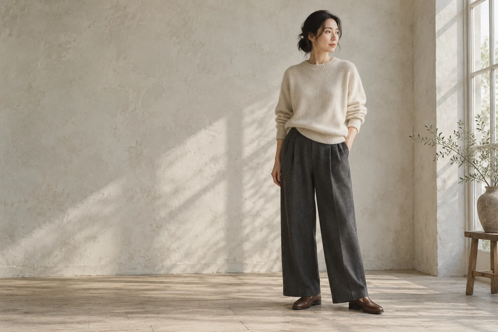
01 — Concept選ぶ基準
STITCH & CO. の「STITCH」は
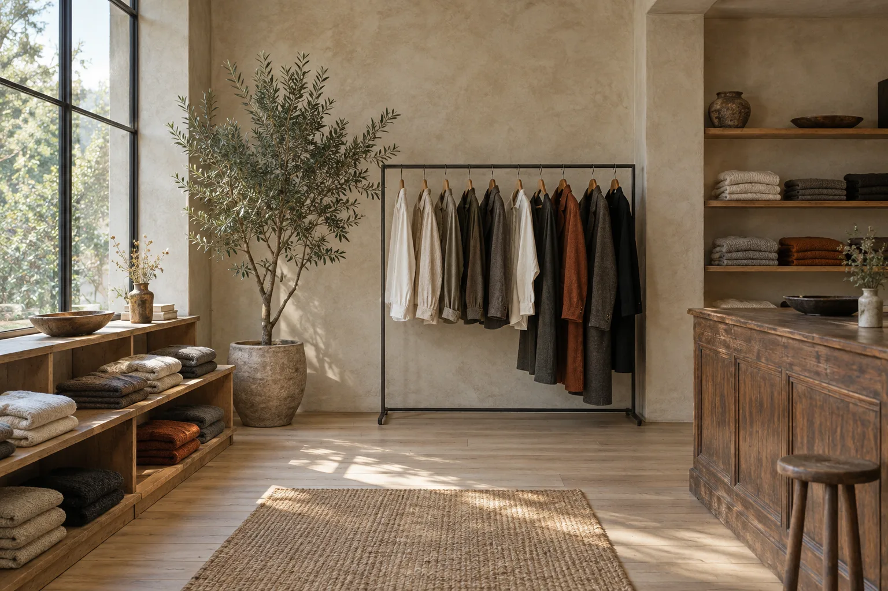
どこの糸で、どこで織られ、誰が縫ったのか。お客さまに聞かれたとき、きちんと答えられる服だけを扱います。
ステッチの細かさ、ボタン付けの強さ、縫い代の始末。展示会では必ずサンプルを裏返し、縫い目まで見てから仕入れを決めます。
シーズンが終わったら手放す服ではなく、洗って、直して、少しずつ自分の形になっていく服を。お直しやケアの相談も店で受けています。
02 — Lookbook2026 秋冬ルック
今季は「ふだん着の格上げ」が
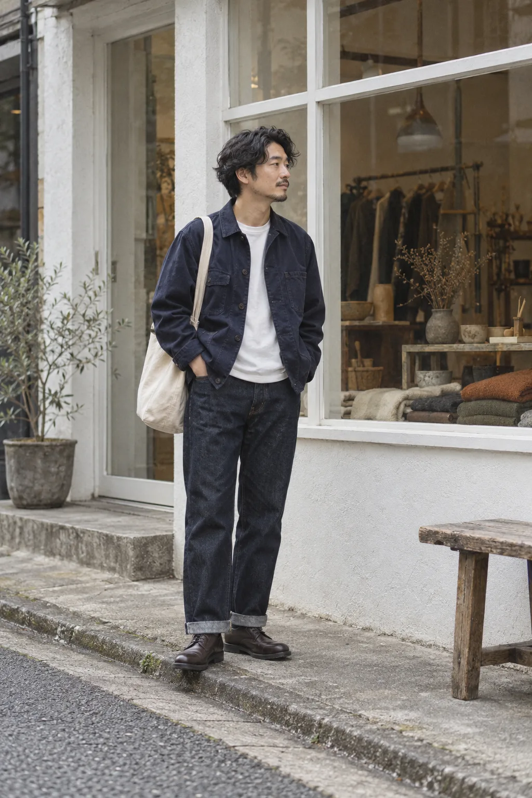
02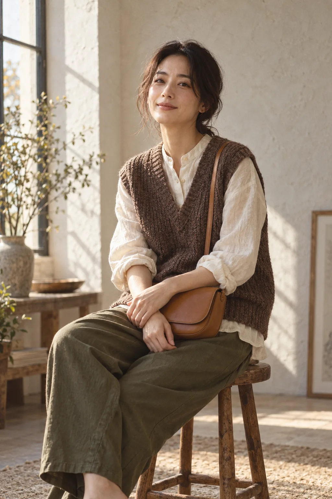
03※ブランド名・商品名はすべて架空のものです。
03 — Brands & Category取扱カテゴリ
国内の小さな工房を中心に、
岡山の小さな縫製工場と作るシャツ。1インチに14針の細かい運針で、洗うほど体になじみます。
ヤクとウールを混ぜた、軽くて暖かいニット。毛玉ができにくい強撚の糸を選んでいます。
旧式の力織機で織ったセルビッジデニム。穿き込んだ後の色落ちまで含めて、一本の服です。
仕立て職人が一人で営むアトリエのコート。肩まわりにゆとりを残し、重ね着しやすい型紙です。
植物タンニンなめしの革で作る鞄と靴。手縫いのステッチは、ほつれても店で直せます。
毎日着るためのカットソーとパンツ。首まわりがよれにくい、度詰めの天竺を使っています。
※ブランド名・説明はポートフォリオ用の架空のものです。
04 — New In今週の入荷
毎週木曜に、少しずつ入荷します。
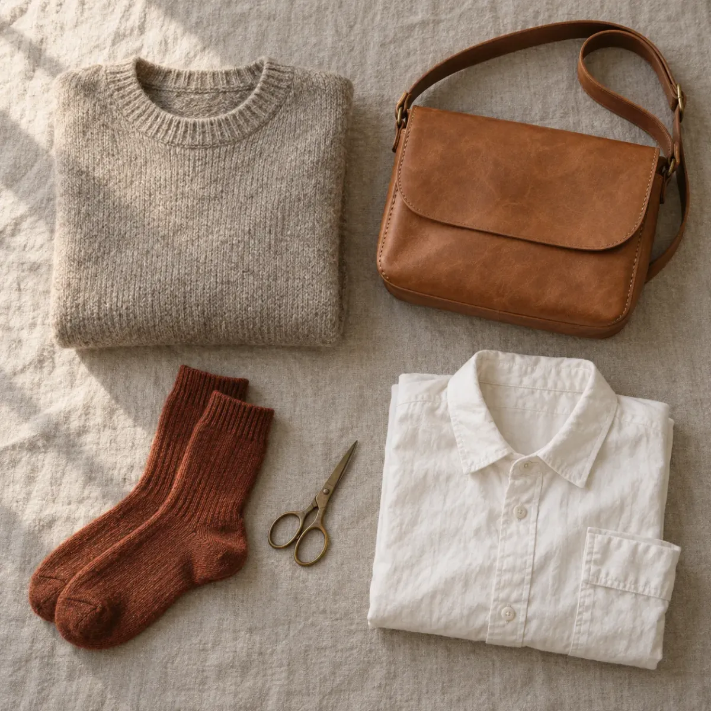
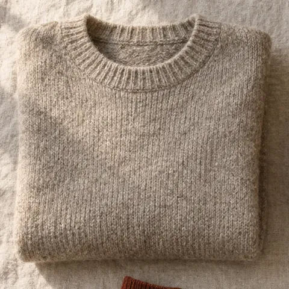
オートミール / チャコール ・ S〜L
¥24,200
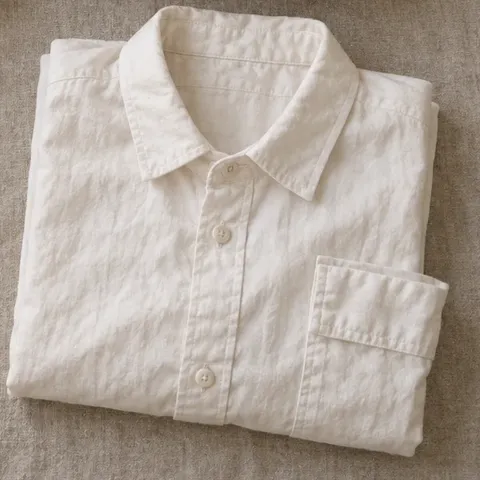
オフホワイト / サックス ・ 1〜3
¥18,700
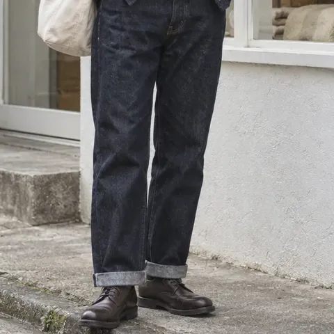
ワンウォッシュ ・ 28〜36
¥27,500
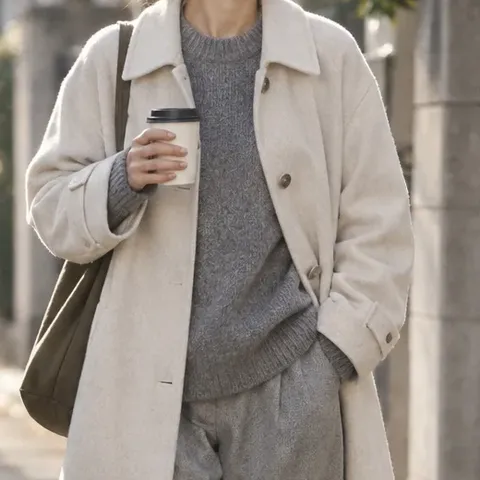
エクリュ / ネイビー ・ 1〜3
¥68,200
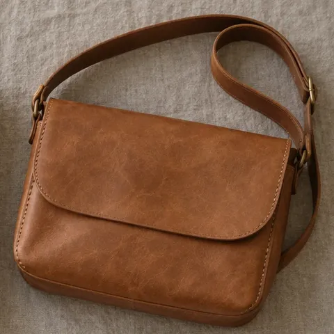
キャメル / ブラック
¥39,600
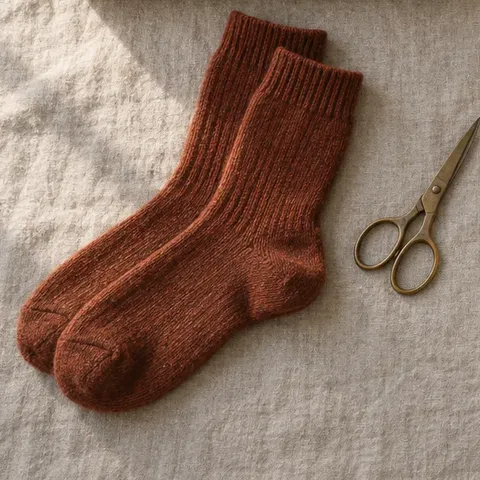
ラスト / オートミール / チャコール ・ 23〜27cm
¥2,420
在庫は日々動いています。
※商品・価格（税込）はポートフォリオ用の架空データです。
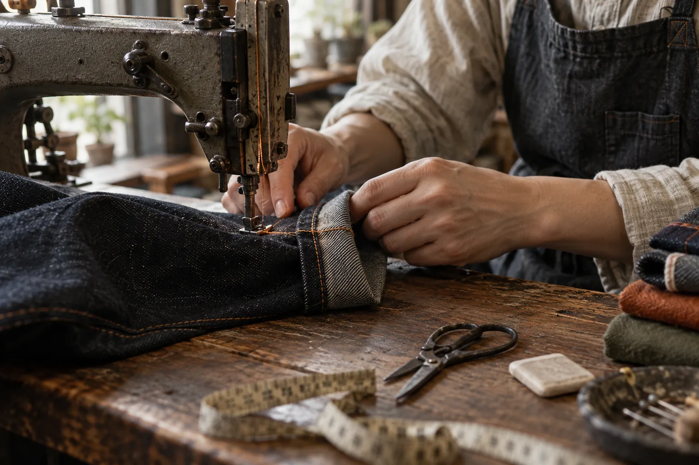
05 — Serviceお直し・スタイリング相談
店の奥に
おひとり60分、スタッフが付きっきりでご案内します。手持ちの服の写真を見せていただければ、合わせ方から一緒に考えます。
無料 ／ 予約制
デニムはチェーンステッチでの裾上げにも対応。当店でお買い上げの商品は、当日〜3日でお渡しします。
当店購入品 無料 ／ 持ち込み 1,650円〜
ニットの毛玉取り、革小物のオイルメンテナンス、ほつれ直し。作り手と相談しながら、できる限り直して着られるようにします。
内容により お見積り
気になる商品は1週間まで取り置きできます。贈り物には、生成りの布袋と麻ひもでお包みします。
取り置き 無料 ／ 包装 330円
※料金・日数はポートフォリオ用の架空データです。
06 — Journal店の日々
入荷したばかりの服、
@stitchandco.nagoya
Instagram をフォロー※架空のアカウントです。デモサイトのため外部リンクはありません。
07 — Shop店舗情報
Owner / Buyer
佐伯 透 Toru Saeki
アパレルの企画職を経て、2019年にこの店を開きました。「いい服を長く着る」ことを、売り場からいちばん近い場所で伝えたいと思っています。試着だけでも、どうぞお気軽に。
08 — Reservation & Contact来店予約・お問い合わせ
スタイリング予約、